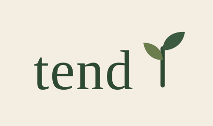
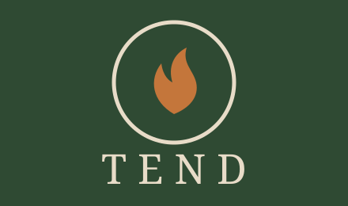
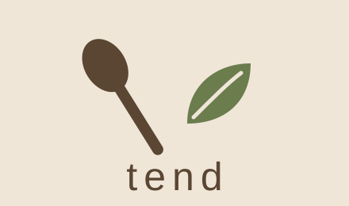
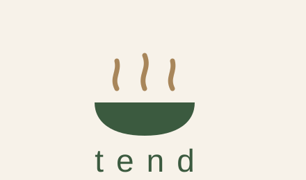
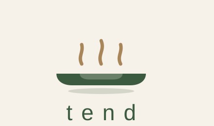

Four logo concepts — warm, woodsy, earthy. Contemporary kitchen elegance.

Serif wordmark with a seedling growing from the final stroke. Quiet, literary, garden-to-kitchen.

A tended flame in a ring — keeper of the fire. Letterspaced caps on a forest-green field with terracotta accent.

Walnut wooden spoon crossed with an olive leaf — the tool and the garden as equal partners.

A green bowl with rising steam in muted brass. The most app-icon-ready — reads at 16px.

Variant of 4 — a wide, shallow plate with a rim highlight and soft shadow. Slightly more "dinner is served" than "simmering."